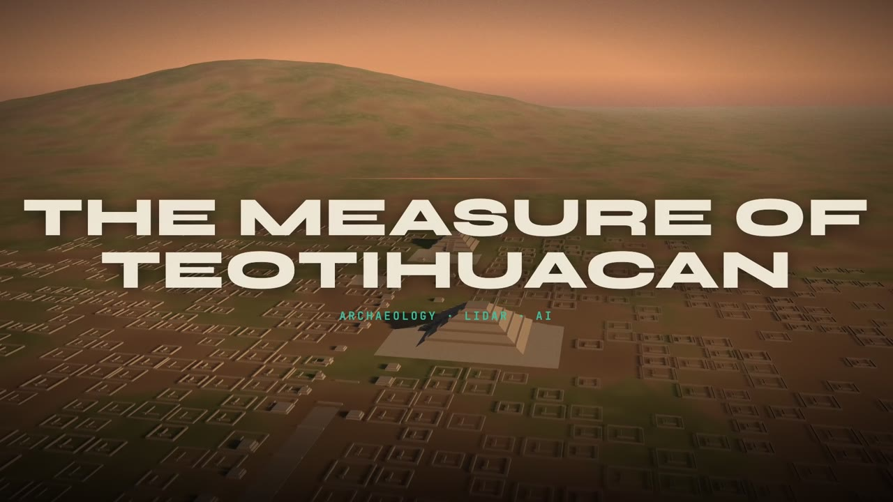

A research plan · archaeology × lidar × AI
The Measure of Teotihuacan
film
chapters
Film, walkthrough and written plan share one storyboard
Prototype: the city rebuilt on public lidar →

▶
Play
0:00 / 0:00
Sound on
⤢
The film plays live from the engine that rendered the MP4. Click a step to jump the film; play the film to move the steps.
← Prev
Play this step
Next →
In practice